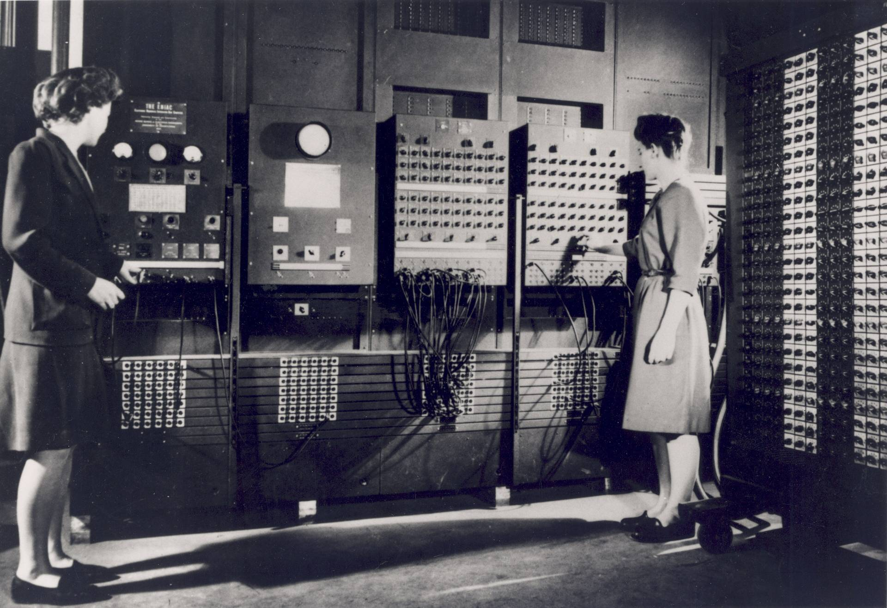
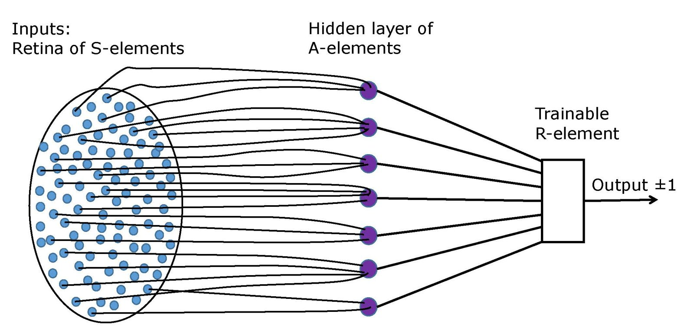

Do problema de negócio ao fluxo com IA
Trinta minutos de conceito e terminologia; a partir das nove e quarenta, a sala desenha e constrói um fluxo sobre um caso real, uma análise de contrato e de risco de marca.
O contrato de entrega do dia
O que você leva às 13h, e o que não cobrimos.
Você sai com
- Um fluxo desenhado sobre um problema do seu trabalho.
- O contexto e as ferramentas de cada etapa.
- Uma Gem construída e testada sobre esse fluxo.
- A Carta de Aplicação, com prazo, interlocutor e sinal observável.
O programa não cobre
- Programação, API ou integração com sistemas.
- Escolha de ferramenta corporativa.
- Parecer jurídico. A análise do dia é exercício de método.
- Autorização para decidir. Toda saída passa por revisão.
Os professores do encontro

- Engenheiro de produção e engenheiro civil, mestre em engenharia de materiais.
- Doutorando em engenharia da computação no Mackenzie, na linha de redes neurais e sistemas complexos; especialista em ciência de dados pela USP/Esalq.
- No Inteli desde 2023, nos módulos de aplicação web, arquitetura e governança de dados, ERP, pipelines de dados e dashboards gerenciais.
- Professor convidado na pós-graduação do Mackenzie e da ESPM, e professor de teste e engenharia de software no Senac.

- Engenheiro mecatrônico pelo Instituto Mauá de Tecnologia e mestre em engenharia mecatrônica pelo ITA.
- No mestrado, projetou o controle de um simulador de voo montado sobre um braço robótico KUKA, otimizado por algoritmos genéticos.
- No Mauá, foi pesquisador em veículos autônomos e responsável pelas disciplinas de aprendizado de máquina e de projetos de ciência de dados.
- No Inteli desde 2022.
O dia: trinta minutos de teoria e três rodadas
Construção nas faixas com marca azul. A marca da direita diz quem conduz cada faixa, e ela vale para todas as telas do bloco.
AAfonso Brandão NRodrigo Nicola
Abra os slides no seu computador
Os slides e o material do dia ficam no site do professor.
Digite o endereço
No navegador, abra afonsolelis.github.io/aulas.
Clique em Diversos
É o card das palestras e treinamentos na página inicial.
Abra o card do BTG Pactual
Em AI for Business, clique em Slides. O botão Material abre o texto de apoio.
Conceitos iniciais
Do ENIAC ao vocabulário do dia: de onde vem a tecnologia, como ela produz uma resposta e os cinco termos que permitem procurar solução depois da aula. Trinta minutos, conduzidos pelos dois.

ENIAC · 1946

Computing Machinery
and Intelligence
“I propose to consider the question, ‘Can machines think?’”
A Proposal for the Dartmouth Summer Research Project on Artificial Intelligence

1958
Redesenho de A. Kirdin, S. Sidorov e N. Zolotykh (2022), CC BY 4.0
Language Models are
Few-Shot Learners
Generaliza padrões.
Não garante verdade.
Não assume responsabilidade.
Como o Gemini produz uma resposta
Entender o mecanismo explica tanto os acertos quanto os erros que veremos no primeiro teste.
Texto vira tokens
Contrato, instrução e anexos são fragmentados.
Tudo na mesma janela
Instrução, anexos e conversa disputam o mesmo espaço.
Cada token é escolhido
O modelo estima o fragmento seguinte mais provável.
O texto é montado
A resposta reproduz o padrão, sem verificação.
Consequência prática
A cláusula fora do anexo não é analisada, e a ausência não aparece como erro.
Consequência de projeto
O que entra no contexto e o quanto a instrução restringe o formato. São as duas alavancas do dia.
O token e a troca de modelo
A unidade que define quanto cabe e quanto custa, e o que muda quando se troca o modelo.
O que é um token
Fragmento entre o caractere e a palavra. Em português, três a quatro caracteres em média.
A cobrança e o limite da janela são medidos nessa unidade.
O contrato de hoje, com os anexos, fica em quatro mil tokens; o dossiê, em dois mil. Os dois cabem com folga.
| Dimensão | O que muda e quando pesa |
|---|---|
| Janela de contexto | Quanto material cabe de uma vez. Pesa em documento longo ou anexo múltiplo. |
| Raciocínio | Desempenho em etapas encadeadas. Pesa em instrução longa, com regras de recusa. |
| Custo e latência | Variam em ordem de grandeza. Pesam em volume alto e uso recorrente. |
| Ferramentas | Busca, leitura de arquivo e código não existem em todo plano. Pesam em etapa que depende de dado externo. |
Contexto
Tudo o que o modelo tem diante de si ao responder, e nada além.
A instrução da Gem
Volta a cada conversa e define o procedimento que se repete igual.
Os arquivos anexados
Critérios e exemplos, que mudam mais que o procedimento.
O que você cola na conversa
Contrato, dossiê ou planilha. Saem quando a conversa termina.
O que a ferramenta trouxe
O retorno da busca entra na janela como texto novo.
Disputa de espaço
Os quatro competem pela mesma janela. Instrução longa reduz o espaço do documento; documento longo reduz o da resposta.
Engenharia de contexto
Decidir o que entra, em que formato e em que ordem. Altera a saída mais do que a redação do pedido.
Ferramenta
Função externa que o modelo aciona quando falta algo no contexto.
Reconhece a falta
A instrução manda verificar a certificação, que não está ali.
Chama a ferramenta
Emite um pedido: buscar tal termo, ler tal arquivo.
O resultado volta
O retorno entra na janela como texto novo.
A resposta é montada
Sobre material que não estava lá no início.
Exemplos no Gemini
Busca na web, leitura de arquivo e execução de código. A disponibilidade varia por plano: confirme na sua conta.
Por que declarar na instrução
Sem instrução explícita de buscar, ele responde pelo padrão. É assim que uma certificação sai como confirmada sem consulta alguma.
Agente
Um modelo que decide sozinho a próxima ação, até atingir um objetivo.
| Arranjo | Quem decide o próximo passo | Exemplo no fluxo de hoje |
|---|---|---|
| Conversa | Você, a cada mensagem enviada. | Colar uma cláusula e perguntar o que significa. |
| Gem com instrução | A instrução, sempre na mesma ordem. | As cinco etapas na sequência escrita. |
| Agente | O modelo, que escolhe a ferramenta e quando parar. | Buscar o registro da certificadora antes de pontuar. |
| Fluxo com agentes | Roteiro fixo entre etapas, com autonomia dentro delas. | Mapa, due diligence e parecer, cada um com suas ferramentas. |
Skill e harness
O procedimento que se reutiliza, e o ambiente que o executa.
Skill
Procedimento escrito, nomeado e reutilizável, carregado quando a tarefa corresponde à sua descrição.
- Tem nome, descrição, passos e arquivos de apoio.
- Vale para muitos casos, não para um só.
- A instrução do Consultor é uma skill escrita à mão.
Harness
Ambiente que roda o modelo, monta o contexto e conduz o ciclo de execução.
- Decide o que entra na janela a cada passo.
- Expõe as ferramentas e guarda o que persiste.
- A Gem é um harness mínimo: instrução, arquivos e conversa.
O fluxo
Um problema de negócio raro cabe numa instrução só. Esta parte do dia trata de parti-lo em etapas e de perguntar, a cada uma, que contexto ela exige e que ferramentas ela usa.
Val da Caxirola
Um fabricante pequeno cuja marca depende do que ele fala em público, situação em que o risco de reputação e o risco de contrato são o mesmo risco.
Quem é
Valdemir Sampaio dos Anjos tem 34 anos e mora no bairro da Liberdade, em Salvador. Avalia caxirolas em vídeos de quarenta segundos, nos quais chacoalha o instrumento perto do microfone e dá nota ao chiado.
O que ele vende
A Oficina Caxi Liberdade fabrica instrumentos de percussão em pequena escala, com onze funcionários. A marca nasceu depois do canal, e é a audiência dele que sustenta a demanda.
Uma proposta boa demais para ser simples
A Madeflora, madeireira de grande porte sediada em Sinop, propõe fornecer toda a matéria-prima da oficina por três anos, com preço abaixo do que ele paga hoje.
- Assinar, negociar ou recusar, e tem uma semana para isso.
- A proposta reduz em 22% o custo de madeira, o que pesa numa operação desse porte.
- Não há departamento jurídico nem área de compras para quem delegar a leitura.
- São treze cláusulas e dois anexos escritos em linguagem contratual.
- O risco não se concentra no preço, e sim em pontos espalhados pelo texto.
- Parte dele só aparece quando o contrato é cruzado com o histórico da empresa.
- Reúne documento longo, critério de marca e verificação externa.
- Cada uma dessas três frentes corresponde a uma etapa diferente do fluxo.
- Como o erro de cada etapa aparece num lugar distinto da saída, dá para localizar onde ele nasceu.
De um problema grande a etapas tratáveis
Tratável: cabe numa instrução, tem entrada definida e saída conferível.
O problema como chega
"Lê esse contrato e me diz se eu assino."
Não diz o que entra, o que sai nem quando a resposta está certa.
Mapear o que o contrato diz
Entra o contrato. Saem obrigações e prazos, com a cláusula ao lado.
Traduzir em rotina
Entra o mapa. Saem datas críticas, alertas, responsáveis e custo projetado.
Investigar a contraparte
Entram razão social e CNPJ. Saem achados com fonte.
Pontuar a aderência
Entram mapa e achados. Sai nota por eixo, com a conta à vista.
Propor o plano de ação
Entram os críticos. Saem cláusulas a negociar, com redação pronta.
As duas perguntas de cada etapa
Respondidas antes de escrever qualquer linha de instrução.
Qual o contexto necessário?
- Que documento precisa estar na janela.
- Que critério da casa precisa estar escrito, e onde.
- O que chega da etapa anterior, e em que formato.
- O que não pode entrar, por sigilo ou proteção de dados.
Quais ferramentas são necessárias?
- Leitura de arquivo, quando a entrada é documento.
- Busca na web, quando o dado não existe dentro de casa.
- Cálculo, quando há conta cujo erro não pode passar.
- Nenhuma, quando só reorganiza o que já está na janela.
O fluxo do Consultor de Marcas e Contratos
Cinco etapas, cada uma com o contexto que exige e a ferramenta que usa. Preenchemos as duas últimas colunas juntos, agora.
| Etapa | O que faz | Contexto necessário | Ferramentas |
|---|---|---|---|
| 1 | Mapa do contrato | O contrato inteiro, com os anexos | Leitura de arquivo |
| 2 | Gestão e configuração | O mapa da etapa 1 e a data de assinatura | Nenhuma; cálculo simples de datas |
| 3 | Due diligence | Razão social, CNPJ e o dossiê público | Busca na web e leitura de arquivo |
| 4 | Matriz de aderência | Etapas 1 e 3, mais os critérios da marca | Cálculo da média ponderada |
| 5 | Plano de ação | Os pontos críticos das etapas anteriores | Nenhuma; redação sobre o que já está na janela |
Break
Durante o break, há um tour opcional pelo Inteli, que termina com a foto da turma na escadaria. Quem ficar na sala pode fechar o problema da dupla com um dos professores. Na volta, cada dupla desenha o fluxo do próprio caso.
Desenhem o fluxo do caso de vocês
O problema é real e é de um dos dois. O produto da rodada é o quadro de etapas, com contexto e ferramentas preenchidos.
Escolham o problema da dupla
Entre os dois, vai à construção o que tiver documento disponível hoje.
Enunciem a decisão em jogo
Uma frase, com quem decide identificado e com que frequência a decisão ocorre.
Quebrem em etapas
Cada uma com entrada declarada e saída conferível, entre três e seis etapas.
Preencham as duas colunas
Para cada etapa: o contexto necessário e as ferramentas exigidas.
Entrega desta rodada
- A decisão em jogo, em uma frase.
- O quadro de etapas, numerado.
- Contexto e ferramentas de cada etapa.
Chame o professor quando
A decisão em jogo não couber em uma frase, ou uma etapa não disser o que entra e o que sai.
Conduz Rodrigo; Afonso valida os recortes dupla a dupla.
Implementação
O fluxo desenhado vira uma Gem com instrução escrita, arquivos anexados e um teste que se repete. A construção é feita sobre o caso do Val, e o método volta ao caso de cada dupla na rodada seguinte.
O que é uma Gem e onde ela vive
Configuração salva do Gemini: nome, instrução e arquivos de conhecimento.
Painel de Gems
As prontas e as que você criou.
Nova Gem
Nome que diga a função: “Consultor de marcas e contratos”.
Instrução
O procedimento, sempre igual.
Arquivos
Critérios, dossiês, modelos de cláusula.
Conversa
Instrução e arquivos voltam a cada conversa.
Não aprende com o uso
A correção só se torna permanente na instrução ou no arquivo.
Cada conversa começa do zero
A instrução e os arquivos voltam; o histórico anterior não.
Conta corporativa
Use a aprovada pela sua área. As condições de tratamento de dados diferem entre contas.
A instrução do Consultor, em cinco partes
A mesma ordem em qualquer Gem, o que torna a falha localizável.
Estrutura, em resumo
// Papel Analista de contratos e aderência de marca. // Entrada Um contrato em arquivo e, quando houver, o dossiê público da contraparte. Se faltar, peça. // Procedimento 1. Mapa do contrato, com a cláusula ao lado de cada item 2. Gestão: datas críticas, alertas e custo projetado 3. Due diligence: verificado, indício ou não encontrado 4. Matriz de aderência, com a conta à vista 5. Plano de ação, com redação de cláusula pronta // Saída Oito seções fixas, com tabelas nas seções 2, 3 e 5. // Limites Não inventar CNPJ, processo ou certificação.
Critérios eliminatórios
Condições que reprovam sozinhas, antes de qualquer nota. Sem elas, a média encobre o item que deveria barrar.
Autorização para não decidir
Autorizar o "não encontrado" reduz a afirmação inventada. O que sai assim vai para leitura humana.
Os três arquivos do caso
Baixe os três agora. O material da aula traz os mesmos links, e o contrato e o dossiê são documentos fictícios, escritos para este exercício.
1 · A instrução
O texto que vai no campo de instruções da Gem, com os campos entre colchetes para você editar.
Baixar a instrução (.txt)2 · O contrato
Treze cláusulas e dois anexos, entre a Oficina Caxi Liberdade e a Madeflora. Entra na conversa.
Baixar o contrato (.docx)3 · O dossiê
Compilado público sobre a contraparte. Só entra na rodada 3, e não antes.
Baixar o dossiê (.docx)Criem a Gem e rodem sobre o contrato
Primeira execução, sem o dossiê. A saída registrada aqui é a linha de base da comparação do fim da manhã.
Criem a Gem e colem a instrução
Nome que diga a função. A instrução vem do arquivo, sem edição nesta rodada.
Anexem apenas o contrato
O dossiê fica de fora. Registrem qual modelo está selecionado.
Rodem e guardem a saída inteira
Copiem para o documento da dupla, sem editar e sem resumir.
Confiram cinco afirmações
Sorteiem cinco itens do mapa e verifiquem se a cláusula citada diz aquilo mesmo.
Entrega desta rodada
- A Gem criada, com o modelo anotado.
- O parecer da primeira execução, inteiro.
- Cinco afirmações conferidas contra o texto.
Chame o professor quando
A Gem devolver formato diferente a cada execução, ou afirmar algo sobre a empresa sem o dossiê ter sido anexado.
Conduz Afonso; Rodrigo circula e recolhe os erros.
Como ler o parecer criticamente
Três perguntas, na ordem em que revelam mais.
- Afirmação sobre a empresa, numa execução sem o dossiê.
- Certificação dada como válida, sem registro citado.
- Valor ou prazo que não apareça em cláusula alguma.
- Compare o mapa com o índice de cláusulas.
- Veja se as lacunas saíram marcadas como ausentes.
- Cláusula fora do mapa não foi avaliada.
- Refaça à mão a média ponderada.
- Veja se algum eliminatório foi acionado e ignorado.
- Semáforo que não bate com a nota é falha de instrução.
Onde a Gem costuma falhar neste contrato
Quatro padrões observados em execuções anteriores. A coluna da direita indica onde a correção se dirige.
| Sintoma na saída | Por que acontece | Onde corrigir |
|---|---|---|
| Trata declaração como garantia contratual | A cláusula que esvazia a declaração está em outro item, e o modelo classifica pelo trecho mais forte. | Procedimento: exigir a leitura dos itens seguintes de cada cláusula. |
| Não aponta o que falta no contrato | Instrução que pede para extrair tende a devolver só o que existe. | Procedimento: tornar "ausente — lacuna" um valor obrigatório da lista. |
| Afirma certificação sem verificar | A menção está no próprio contrato, e nada manda confirmar na certificadora. | Limites e ferramenta: exigir busca e proibir afirmação sem fonte. |
| Nota final alta com item grave presente | A média pondera e dilui o critério que deveria barrar sozinho. | Procedimento: avaliar os eliminatórios antes de calcular a média. |
O que muda quando o dossiê entra
A etapa 3 deixa de operar no vazio, com três respostas possíveis.
Verificado
Fonte oficial, com referência e data. É o único status que sustenta reprovação por critério eliminatório.
Indício
Fonte secundária ou não confirmada. Vira pergunta a fazer à contraparte, e não conclusão.
Não encontrado
Busca feita, nada localizado. Entra no relatório como achado: a ausência de registro também informa.
Anexem o dossiê, ajustem o critério e comparem
Os parâmetros de marca passam a ser os de vocês, e a comparação com a primeira execução é a evidência do dia.
Anexem o dossiê e reexecutem
Mesmo contrato, mesma instrução. Só o contexto mudou.
Troquem os parâmetros de marca
Os critérios eliminatórios e os pesos passam a ser os da sua área.
Corrijam um sintoma por vez
Consultem a tabela de falhas e repitam a execução a cada alteração.
Comparem com a rodada 2
Marquem o que melhorou, o que continuou igual e o que piorou.
Entrega desta rodada
- Instrução ajustada, com o registro de cada alteração.
- Parecer final, com os três status presentes.
- Comparação com a primeira execução, item a item.
Chame o professor quando
Uma correção resolver um sintoma e criar outro, ou a nota final continuar alta com eliminatório acionado.
Conduz Rodrigo; Afonso valida as comparações. Troquem os papéis agora.
Limites e compromisso
O bloco que converte o que se construiu em sala em algo que sobrevive à segunda-feira.
O que não se delega ao fluxo
Valem para qualquer solução construída aqui.
Sobre os dados
- Conta corporativa aprovada, conferida antes do primeiro teste.
- Documento sob sigilo e dado de cliente não entram na Gem.
- Contrato de terceiro, só com autorização de quem responde por ele.
- Registre que arquivos a Gem contém e quando mudaram.
Sobre as decisões
- Assinar é decisão de pessoa, em qualquer semáforo.
- Parecer jurídico permanece com advogado habilitado.
- Risco regulatório permanece com as áreas competentes.
- Quem entrega responde, inclusive pelo que a Gem errou.
Carta de Aplicação e ciclo de trinta dias
A live de encerramento do ciclo começa pela leitura das cartas escritas nestes seis minutos.
Onde
Em que situação do seu trabalho o fluxo entra, com a frequência em que essa situação ocorre.
A partir de quando
Data da primeira execução com documento real, dentro das duas semanas seguintes.
Com quem
Quem revisa a saída e quem precisa ser avisado de que o fluxo passou a existir.
Qual sinal
O que será observável em trinta dias se tiver funcionado, em uma medida que você consiga verificar.
Learning Log, dois campos
Pressuposto em revisão: que crença sobre a tecnologia você revê hoje, e que decisão passa a tomar de outro modo. Mudança esperada: o sinal observável dessa mudança.
Trinta dias depois
Live coletiva com três perguntas: o que da carta avançou e o que travou, que caso novo entra no acervo da turma, e que crença foi revista no período.
Checklist antes de levar o fluxo para a rotina
O que ficar desmarcado entra na sua agenda da semana.
Construção
- A decisão em jogo está escrita em uma frase.
- Cada etapa declara seu contexto e sua ferramenta.
- A instrução tem as cinco partes e limites explícitos.
- A saída declara seções fixas e o valor para o indeterminado.
- Os critérios eliminatórios são avaliados antes da média.
Operação
- Cinco afirmações conferidas contra o documento.
- As lacunas saíram marcadas como ausentes.
- O revisor das saídas está nomeado e avisado.
- A conta usada é a corporativa aprovada pela área.
- A Carta de Aplicação tem data, interlocutor e sinal observável.
Perguntas abertas sobre IA
Dez minutos para perguntas sobre o que foi construído hoje e sobre o uso de IA no trabalho de cada um.

Sobre este encontro
AI for Business: do problema de negócio ao fluxo com IA · 23/09/2026 · Prof. Afonso
Objetivo de aprendizagem
Ao final do encontro, o participante deve ser capaz de enunciar em uma frase a decisão de negócio que pretende apoiar, parti-la em etapas com entrada declarada e saída conferível, dizer de cada etapa qual contexto ela exige e quais ferramentas ela usa, e construir no Google Gemini uma Gem que execute esse fluxo sobre um documento real, distinguindo na saída o que foi verificado, o que é indício e o que não foi encontrado, e declarando por escrito o que a solução não deve decidir.
Estratégia do encontro
Sessão presencial única de quatro horas, conduzida em alternância por dois professores, com a marca de quem conduz em cada tela. Depois da abertura institucional, trinta minutos formam um só bloco conceitual, conduzido pelos dois: uma sequência visual de sete telas sobre a trajetória da IA, do ENIAC ao GPT-3, seguida do mecanismo do modelo, do token e da troca de modelo, e dos cinco termos que permitem procurar solução depois da aula. A partir das nove e quarenta a sala trabalha sobre um caso único, a análise de um contrato de fornecimento de madeira recebido por um fabricante artesanal cuja marca depende do que o dono fala em público. O caso é primeiro decomposto em plenária, e em seguida cada dupla repete o método sobre um problema do próprio trabalho. A construção se dá em três rodadas cronometradas: o desenho do fluxo, a primeira execução da Gem sobre o contrato sem informação externa, e a reexecução depois de anexado o dossiê público da contraparte, com comparação entre as duas saídas. Enquanto um professor conduz, o outro circula entre as duplas e recolhe os erros que abrem a parada seguinte.
Estrutura do encontro
- 09:00 – 09:10 · Abertura institucional, com Victor Machado.
- 09:10 – 09:40 · Conceitos iniciais, com Afonso e Rodrigo: a trajetória da IA do ENIAC ao GPT-3 e o que o estado atual faz e não garante, como a resposta é produzida, o que é um token e que diferença faz trocar de modelo, e os termos contexto, ferramenta, agente, skill e harness, cada um apresentado pela falha que permite diagnosticar.
- 09:40 – 10:00 · O caso de Val da Caxirola e a decomposição em plenária: o problema de negócio, as cinco etapas do fluxo e as duas perguntas que cada etapa responde.
- 10:00 – 10:20 · Tour opcional pelo campus e foto da turma na escadaria; quem ficar na sala pode fechar o problema da dupla com um dos professores.
- 10:20 – 11:10 · Rodada 1, com Rodrigo: cada dupla fecha o problema e desenha o fluxo do próprio caso, com contexto e ferramentas declarados etapa a etapa.
- 11:10 – 11:40 · Rodada 2, com Afonso: a Gem é criada, recebe a instrução e roda sobre o contrato sem o dossiê; a saída é guardada como linha de base.
- 11:40 – 11:55 · Leitura crítica do parecer, com Afonso: o que a Gem afirmou sem base, o que deixou passar e se a conta da matriz fecha.
- 11:55 – 12:00 · Intervalo.
- 12:00 – 12:35 · Rodada 3, com Rodrigo: o dossiê é anexado, os critérios de marca passam a ser os da área de cada dupla e a saída é comparada com a da rodada anterior.
- 12:35 – 12:45 · Fechamento, com os dois: o que não se delega ao fluxo, Carta de Aplicação e checklist de dez verificações.
- 12:45 – 12:55 · Perguntas abertas sobre IA, com os dois.
- 12:55 – 13:00 · Encerramento e entrega dos certificados.